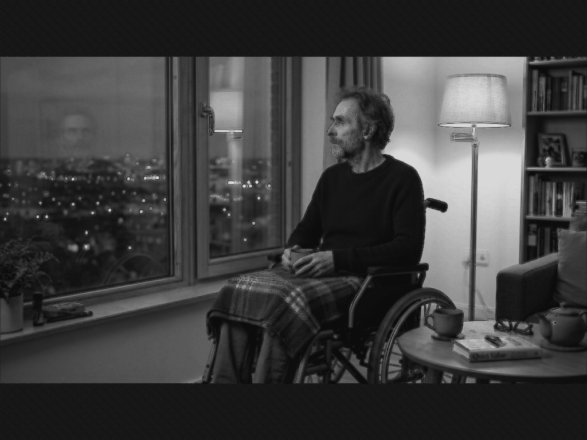

Книга «Фугу для человечества»
Глава 6. Двое на беговой дорожке

(в которой мистер Смит и Иван потеют над одним и тем же)
За оставшееся время пути ветер стих сам по себе.
Выйдя из маршрутки на своей остановке, Дмитрий Александрович опустил воротник и расстегнул верхние пуговицы.
Резкое изменение погоды вновь навеяло воспоминания.
Он посмотрел в сторону нового дома, где проживал его друг — Александр Васильевич, носивший имя великого полководца...
Только вот битву со своим организмом он сейчас проигрывал.
Двадцать лет назад — да, именно тогда они и познакомились — здесь был заросший бурьяном пустырь. Теперь — элитная высотка.
Мысли, словно вечный двигатель, продолжали монотонную работу.
Дружили они давно, но вот что удивительно — сделаны были из разного теста. Александр Васильевич — дипломированный программист, академическая косточка, всегда с лёгким, почти незаметным снобизмом посматривал на Дмитрия Александровича, архитектора-самоучку.
Сашка был въедливым скептиком, и жизнь била его наотмашь: дважды женат, и обе супруги в итоге предсказуемо упорхнули к более успешным и богатым. Зато ради своих детей он был готов стереться в пыль. Отдавал последнее, тянул, оплачивал, вытаскивал — полная противоположность самому Дмитрию Александровичу, который давно занял позицию сурового невмешательства в жизнь выросших отпрысков и принципиально не лез к ним ни с деньгами, которых не было, ни с нравоучениями, которые никому не нужны.
За этими размышлениями он незаметно добрался до квартиры друга.
Дверь была не заперта. Александр Васильевич сидел в кресле у окна. Болезнь высушила его, сделала похожим на нахохлившуюся птицу, но глаза горели всё тем же упрямым, колючим светом.
Услышав шум в коридоре, Александр Васильевич крикнул:
— Дим, ты?
— Да, я, — донеслось в ответ.
Войдя в комнату, Дмитрий пожал другу руку. Они перекинулись парой дежурных фраз, после чего Александр Васильевич, верный себе, ожидаемо свернул на любимую колею.
— Вот ты всё со своей доморощенной философией носишься, Димка, — хрипло произнёс он, кивнув в сторону окна. — Ищешь тут что-то. А я тебе говорю: там, на Западе, система работает.
Там цивилизация, права, нормальные люди.
А у нас — Мордор.
Орки в снегу. Вон, зимой скорая еле прорвалась.
И всё это элементарно, нечего усложнять или пытаться примирять.
Сухо закончил свою тираду Александр Васильевич.
Дмитрий Александрович промолчал.
Он подошёл к стеклу и посмотрел вниз. Прямо под ними сияли витрины фитнес-клуба.
Опять. Опять этот щелчок тумблера. Свой, чужой, правильный, отсталый. Этикетка снова жрала содержимое, только теперь она приобрела геополитический масштаб — пронеслось в голове.
Дмитрий Александрович смотрел на расплывчатые силуэты людей, мерно перебирающих ногами на тренажёрах, а думал о том, как смешно и страшно всё это устроено.
— Ладно, Саш... Тогда давай обойдёмся без философских трактатов и просто понаблюдаем за двумя совершенно обыкновенными представителями вида Homo sapiens в их естественной среде обитания.
Александр Васильевич напрягся: он знал язвительно-ироничный тон и характер друга. Использование определения Homo sapiens – обещало интересное.
А Дмитрий Александрович продолжал:
— Среда эта, к слову, пахнет одинаково на всех широтах — резиновым покрытием, кондиционированным воздухом и железом.
Закончив фразу, он сам с прищуром посмотрел на друга, и в уголках губ стала намечаться тень улыбки.
— Смотри, ведь всё проще, чем ты считаешь.
С твоим-то воображением и образованием тебе ж несложно представить, что где-то на той стороне глобуса системный архитектор, назовём его условно мистер Смит, закрывает свой макбук.
Он только что виртуозно оптимизировал архитектуру приложения — твоя тема, кстати, — выпил свой положенный эспрессо и теперь шагает в фитнес-клуб.
Смит бросает сумку в шкафчик, встаёт на беговую дорожку и, глядя в панорамное окно, включает подкаст.
А где-то на периферии его светлого, рационального ума мерно пульсирует железобетонная аксиома: там, на Востоке, — беспросветный, дикий Мордор. Гигантская заснеженная территория непредсказуемых орков, где свобода мысли раздавлена гусеницами, а люди маршируют строем. Он прибавляет скорость на дорожке, сбрасывая стресс, искренне чувствуя себя частью просвещённого, цивилизованного света.
— Кстати... Именно это и именно так ты только что сказал! — добавил он.
— А теперь... Нам даже меридиан сдвигать не надо!
Вон внизу — наш обычный российский клерк, пусть будет Ваня, сводит последнюю колонку в бесконечном отчёте, тяжело вздыхает, щёлкает кнопкой мыши и тоже берёт спортивную сумку.
Он заходит ровно в такой же фитнес-клуб. Встаёт на беговую дорожку той же самой марки.
Иван смотрит на экран над тренажёрами и размышляет о том, куда катится этот сбрендивший мир.
В его голове уютно и прочно сидит абсолютная, не требующая доказательств истина: там, на Западе, — царство окончательного морального распада, сумасшедший дом, где зловещие ювеналы только и ждут повода, чтобы вырвать детей из рук нормальных родителей ради своих извращённых экспериментов.
Иван делает глоток из шейкера — по иронии, ровно той же самой марки, — чувствуя себя последним оплотом традиционного человеческого рассудка.
Никакие мысли не напрашиваются?!
Дмитрий Александрович смолк, наблюдая за реакцией и мыслительным процессом друга, который явно не хотел принимать доводы.
— Сань, может, я чайку нам приготовлю?!
— А?! — словно в полузабытьи, ответил Александр и добавил: — Да, всё на кухне, сам знаешь.
Дмитрий Александрович оставил друга наедине со своими раздумьями и отправился заниматься чаем.
На кухне звякнули чашки, зашумела вода. В комнате установилась та особая, гулкая тишина, которая возникает только там, где царит недуг.
Там, где человек остаётся один на один с окном.
Александр Васильевич остался в кресле.
Тень от оконной рамы падала на его исхудавшие, обтянутые пледом колени.
«Сукин сын Димка, — подумал он, глядя в стекло. — Ведь подловил-таки».
Пока ты здоров, ползаешь по этой жизни на полной скорости — тебе плевать. Мир прост и прозрачен, как бинарный код. Ноль и единица. Свой и чужой. Успех и неудача.
Здоровому человеку некогда заниматься этой «гуманитарной мутью» — нужно бежать, зарабатывать, тянуть детей, доказывать бывшим жёнам, что они дуры, а ты чего-то стоишь.
Здоровье даёт великую и опасную роскошь: оно позволяет не задавать себе лишних вопросов.
Зачем, если всё работает?!
А потом система даёт критическую ошибку.
Сначала ты просто быстрее устаёшь.
Потом анализы теряют норму.
А потом врачи начинают смотреть на тебя с тем самым вежливым сочувствием, и выясняется, что вся твоя железобетонная уверенность держалась лишь на высоком гемоглобине и нормальном давлении.
Смит и Ваня...
Ведь я всю жизнь искренне считал себя человеком над схваткой. Аналитический ум, светлые идеалы, европейский выбор.
А на деле — просто приклеил на свой лоб ту этикетку, которая казалась солиднее и дороже.
Забился в свой угол с этой красивой бумажкой и свысока поглядывал на остальных.
Но если убрать этикетку — что останется?
Одинаковый остеохондроз.
Одинаковый страх за детей.
И одинаковый финал в кресле у окна, когда никакая геополитическая правота не может заставить твоё собственное сердце биться хоть немного ровнее.
На кухне с лёгким щелчком отключился чайник.
Александр Васильевич тяжело, с хрипом вздохнул, но впервые за долгое время этот вдох не был полон привычного раздражения.
В груди, в кои то веки, осело то самое, редкое, забытое ощущение: его пробило.
Димка был прав.
— Ну что там с чаем, философ? — громче, чем собирался, позвал он в сторону коридора, и в его голосе впервые за вечер проскользнула живая, заинтересованная интонация.
— Да, уже несу. Сахар как обычно, — скорее утвердительно, чем вопросительно, произнёс Дмитрий Александрович и оказался на пороге комнаты.
Опуская поднос с кружками и печенюшками на журнальный столик, он продолжил:
— А теперь поднимемся над ними мысленно. Ну, хотя бы на высоту орбитальной станции.
Что мы видим?
Два углеродных организма.
Оба мучаются от лёгкого остеохондроза после офисного кресла.
Оба покупают корм котам, любят жареное мясо на выходных и тайком переживают из-за выплаты ипотеки.
И если бы по какой-то случайности они столкнулись у одной скамьи для жима, они бы совершенно мирно, на языке жестов, подстраховали друг друга со штангой.
*«Да... Он говорит именно о том, о чём я размышлял мгновением ранее»,* — мелькнуло в голове Александра Васильевича.
— Это абсолютно нормальные, не злые, в меру уставшие от жизни люди, — голос Дмитрия Александровича звучал ровно.
— Они никогда не встречались. Они не знают, как звучат их голоса. Но фокус — этот страшный, дьявольский фокус нашей эпохи — заключается в том, что каждый из них доподлинно знает, *каким* должен быть другой.
Им не нужно знакомиться, им не нужно смотреть друг другу в глаза — им уже всё объяснили.
Между ними нет ни непреодолимого океана, ни космического вакуума.
Между ними стоит глухая, монолитная стена из заботливо вложенных в головы галлюцинаций.
И пока эти двое синхронно потеют на беговых дорожках, яростно сражаясь с картонными монстрами в своих головах, где-то там, наверху, равнодушно мерцают звёзды.
Какой уж тут дальний космос, господа?!
С ноткой грустной иронии, подводил итоги Дмитрий Александрович.
Нам бы для начала научиться видеть человека на соседней беговой дорожке.
Закончил он свою эскападу.
Переглянувшись, они молча принялись за чаепитие
Но пространство между ними обрело осязаемость.